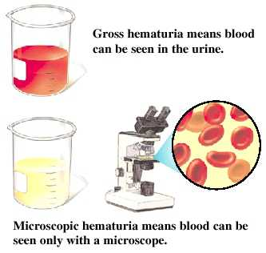

Urine
Did you know that...
Urine is usually yellow or clear, depending upon a person's health and diet.
It usually has an ammonia-like odor due to the nitrogenous wastes
that make up about 5% of the fluid (the remaining 95% is water).

Additional Information
Blood in Urine

Related Disease
Hematuria, or blood in the urine , can be either gross (visible) or microscopic
(as defined by more than three to five red blood cells per high power
field when viewed under magnification). Gross hematuria can vary widely
in appearance, from light pink to deep red with clots.